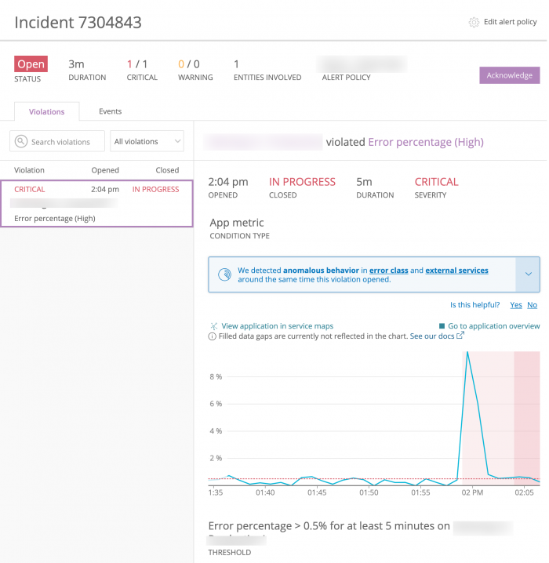

When violations of the threshold set in a condition occur, depending on the policy's Incident preference settings, Alerts may create an incident. You can review information about incidents in several ways:
- View the incidents index so you can scan for patterns in a list of incidents.
- View the violations included in a specific incident to examine associated performance details.
- View the events included in a specific incident to review the timestamps for events, such as a violation opening or closing, notifications, and acknowledgments.

one.newrelic.com > Alerts & AI > Incidents > (select an incident): Notice that the condition's threshold was violated around 2pm (the blue line went over the red dotted line), but the alert wasn't triggered until the violation occurred for more than five minutes, as specified in the condition.
View the incidents index and violation details [#view-violations]
Violations are grouped together into incidents. If you want to change how violations are grouped, open the associated policy and change the Incident preference setting.
To view violation details:
- In the one.newrelic.com top nav, click Alerts & AI, click Incidents, then click Open incidents or All incidents.
- Select an incident row.
- Click Violations to view a list of the violations included in this incident.
- Select one of the violations to see a chart and details for it.
Details for individual violation charts include:
- Timing information: The shaded red area on the chart shows you the time period when the violation occurred, where the preceding shaded pink area represents the degradation period. If you select a violation that lasted longer than two hours, the timeline on the bottom of the chart will be jagged. To provide context for events in the incident, the chart also shows the time frame surrounding the violation.
- Chart guidelines: The red dotted line marks the threshold for the condition. The blue line depicts performance information.
- Anomalous behavior: If Alerts detects anomalous behavior near the time of the violation, you'll see a notification in the violation details.
From this page, you can take action regarding the incident:
Assume responsibility for the incident
View information about events
Mouse over any spot on the blue line in the chart to display event information.
Manually close the violation
Below the chart, select the Manually close violation link.
Anyone in the account who can view the violation can also close it.
Edit the policy or condition
Select the Settings gear
icon or select the name of the policy above the chart.
View the events in an incident [#view-log]
If you want to view alerting events across all products, go to one.newrelic.com, then click Entity explorer. To view the events for just one incident:
- Go to one.newrelic.com, then click Entity explorer.
- Select an entity row.
- In the left nav under Events, click Violations.
- Select one of the events to view a chart and details for it.
Time between violation and notification [#violation-time]
There may be a difference of up to three minutes between the violation event time and the initial notification time due to variances in data processing time.
- Notification time: The time in the notification reflects the timestamp of when we received the request to deliver a notification.
- Violation time: The time you see on the Events page for the violation reflects the timestamp of data collection for the last data point that contributed to opening the violation.
Anomalous behavior detection [#anomalous-behavior]
When we detect large changes in key signals in the alerting entity and/or upstream/downstream applications of the alerting entity, an "anomalous behavior detected" notification appears on the violation's page and in notification channels. You can:
- Expand the notification for details about the detected anomaly (web only).
- See upstream/downstream anomalies (Slack only).
- Select a link to go to the relevant product chart for further investigation.
Alerts notification in Slack
")
Example of an "anomalous behavior detected" notification in Slack.
Alerts notification in PagerDuty
")
Example of an "anomalous behavior detected" notification in PagerDuty.